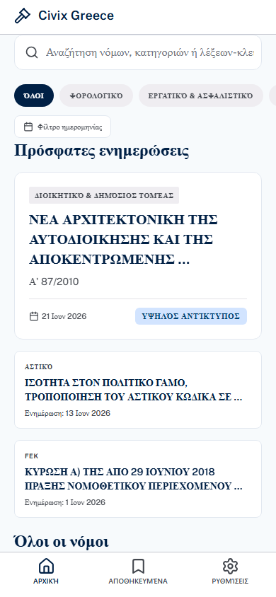
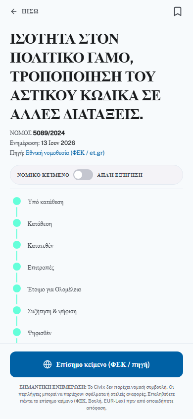
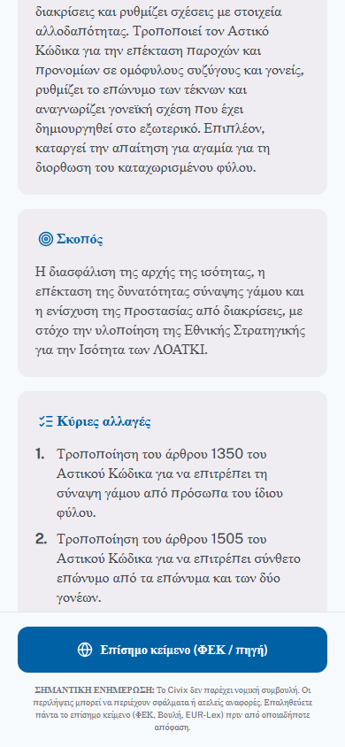
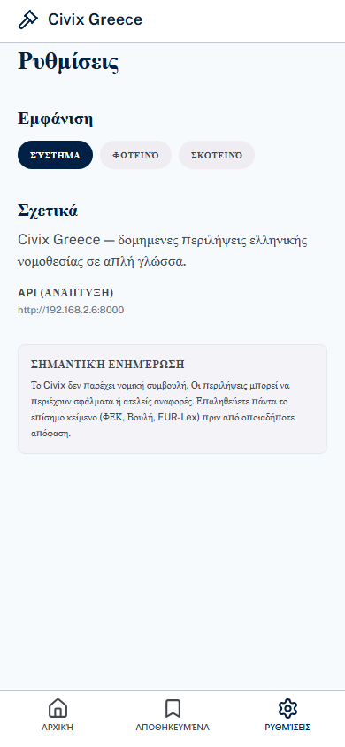

Δομημένες περιλήψεις
Σύνοψη, Σκοπός, Ποιους αφορά, Κύριες αλλαγές, Επίμαχα σημεία — κάθε φορά με τον ίδιο σκελετό.
Νομοθεσία · Απλή γλώσσα · Ελλάδα
Το Civix μετατρέπει σύνθετα νομοσχέδια και ΦΕΚ σε δομημένες, αξιόπιστες περιλήψεις — όχι απλά «μικρότερο κείμενο». Συνδέεται με επίσημες πηγές και αναφέρει άρθρα.
Καινοτομία
Κάθε νομοθετικό κείμενο παρουσιάζεται με σταθερή δομή — ώστε να ξέρετε τι αλλάζει, ποιους αφορά και τι να ελέγξετε πριν αποφασίσετε.
Σύνοψη, Σκοπός, Ποιους αφορά, Κύριες αλλαγές, Επίμαχα σημεία — κάθε φορά με τον ίδιο σκελετό.
Σύνδεσμοι προς ΦΕΚ, Βουλή και EUR-Lex. Κάθε ισχυρισμός στοχεύει σε συγκεκριμένα άρθρα.
Κατηγορίες, ημερομηνίες ΦΕΚ, αναζήτηση κειμένου — βρείτε γρήγορα αυτό που σας αφορά.
Παρακολουθήστε το στάδιο κάθε νομοσχεδίου — από την κατάθεση μέχρι τη δημοσίευση.
Κρατήστε τους νόμους που σας ενδιαφέρουν — συγχρονισμένα με τον λογαριασμό σας.
Διαβάστε άνετα — η εφαρμογή προσαρμόζεται στο θέμα του συστήματός σας.
Προεπισκόπηση
Πραγματικές οθόνες από την εφαρμογή — περιηγηθείτε, διαβάστε περιλήψεις, ελέγξτε πηγές.

Περιηγηθείτε, φιλτράρετε και ανακαλύψτε νομοθεσία με κατηγορίες και ημερομηνίες.

Χρονολόγιο σταδίων, εναλλαγή νομικού κειμένου και απλής εξήγησης.

Δομημένες ενότητες με αναφορές σε άρθρα — Σκοπός, Κύριες αλλαγές και άλλα.

Σαφής disclaimer, επίσημες πηγές και διαφάνεια — όχι νομική συμβουλή.
Τεχνολογία
Ένα pipeline που συλλέγει, επεξεργάζεται και τεκμηριώνει — με RAG και αξιολόγηση ποιότητας.
Crawler για Βουλή & ΦΕΚ — αυτόματη ανακάλυψη νέων κειμένων.
OCR, chunking και ευρετηρίαση σε vector store για ακριβή ανάκτηση.
LLM με RAG grounding — δομημένη έξοδος, όχι ελεύθερη παράφραση.
Έλεγχος ποιότητας πριν τη δημοσίευση — διαφάνεια και αξιοπιστία.
Δομή περιλήψης
Η δομή δεν είναι διακοσμητική — είναι το προϊόν. Ξέρετε πού να ψάξετε για σκοπό, ποιους αφορά και τι αλλάζει πραγματικά.
Σύντομη επισκόπηση σε απλή ελληνική.
Τι επιδιώκει το νομοθετικό μέτρο.
Ομάδες και φορείς που επηρεάζονται.
Όταν υπάρχει ουσιαστική fiscal επίδραση.
Συγκεκριμένες νομικές τροποποιήσεις με άρθρα.
Σημεία συζήτησης — χωρίς υπερβολές.
Τοπικό, εστιασμένο στην ελληνική νομοθεσία και σχεδιασμένο για εμπιστοσύνη. Τα δεδομένα σας, οι πηγές σας.